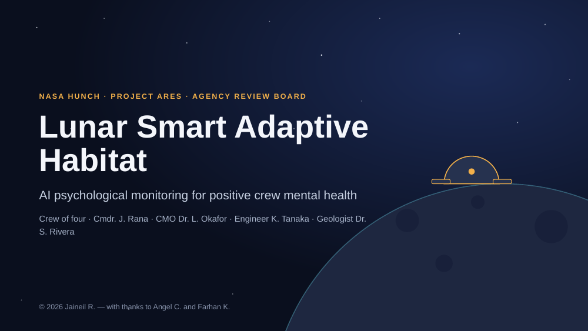
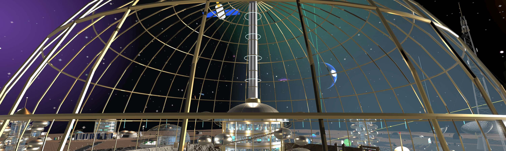
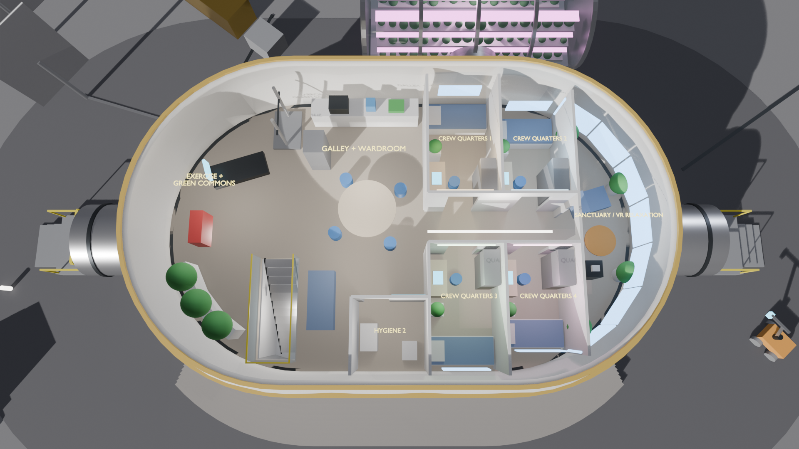
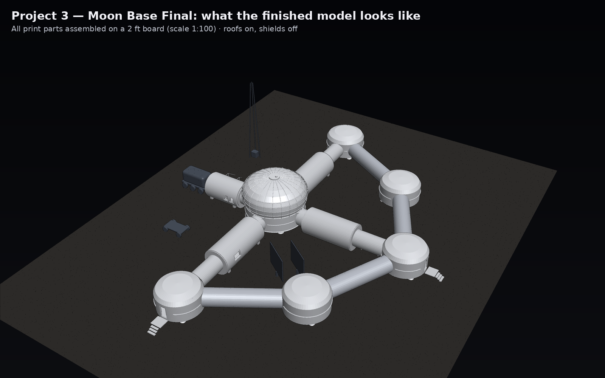
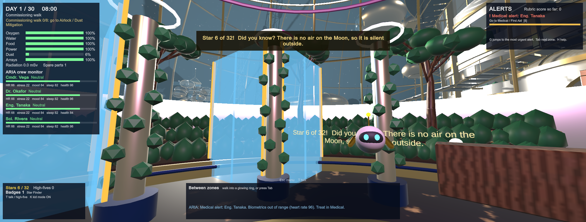
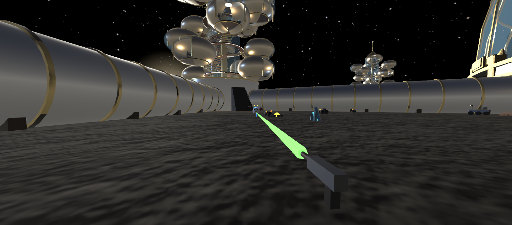
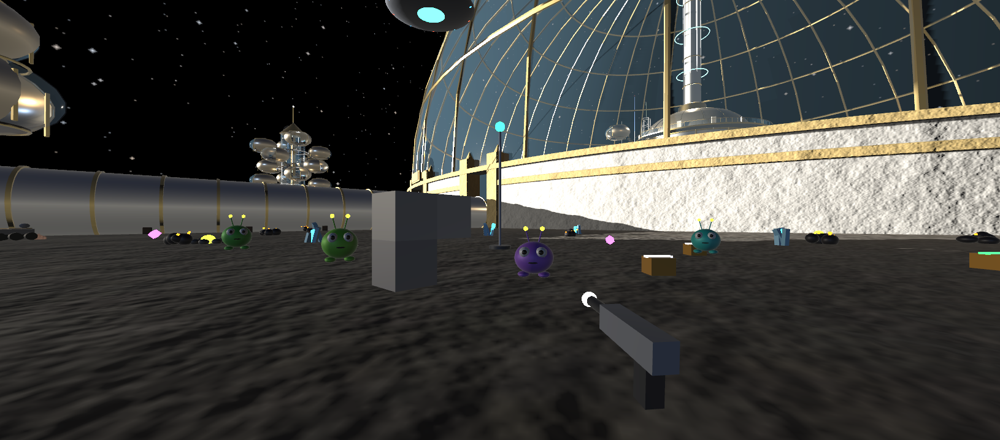
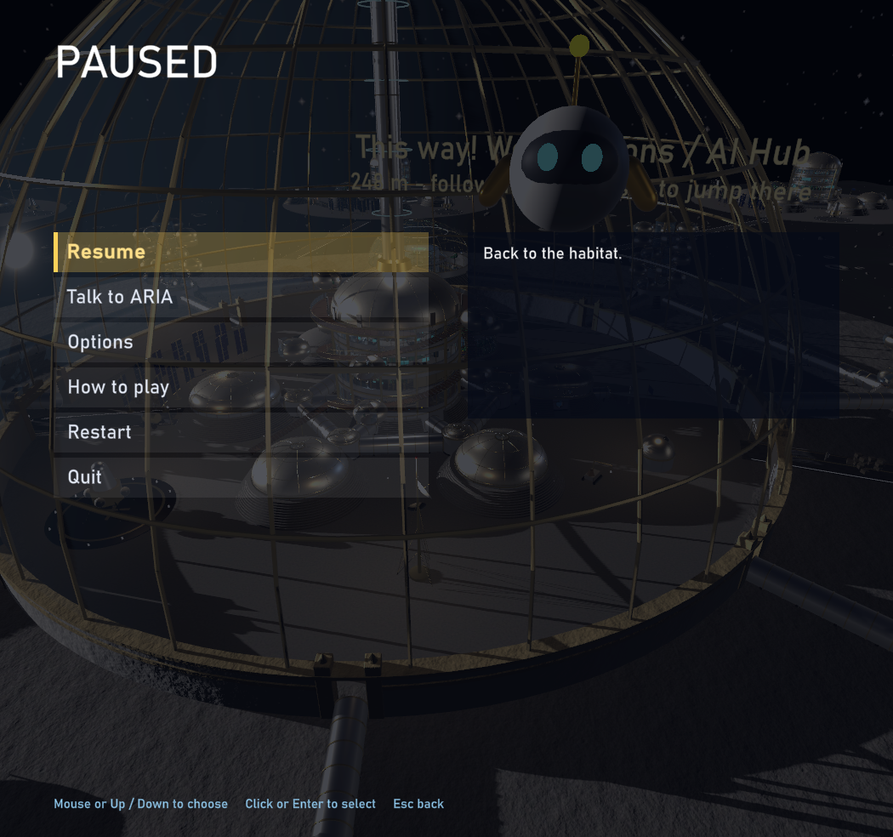

NASA HUNCH · Project ARES · JaiGod
Lunar Smart Adaptive Habitat
A 4-person lunar habitat with AI psychological monitoring for positive crew mental health. Two Unity games, every 3D model, 3D-print kits, the Agency Review Board presentation, research, proposal and rubric deliverables: all in one place.


Game 1 · Unity 6 · VR + desktop
Lunar Smart Adaptive Habitat
Walk the full base in 1/6 g. An AI reads 9 sensors, scores 6 crew conditions and responds in 3 tiers. Run the Board's Q1–Q6, the 72-hour tabletop, and the D1–D4 deliverables in-game (F11).

Game 2 · Unity 6 · VR adventure
Lunar Habitat Commander
Command the base: talk to ARIA, mine minerals, zap aliens, build, wire power, survive solar storms and lunar night. Live on the Meta Horizon Store.
⭐ Final papers
🏆 Rubric & what we did wellOur 200/200 + 20/20 bonus self-assessment, with evidence
📘 Student Brief, with our designOur design typed under every instruction
📊 FINAL slides, with our designWhat we built for every slide
🚀 NASA HUNCH project page, with our designOur design under each requirement
🔬 Research doc, with our designWhere each idea shows up in the games
⚖️ D4 ethics report1,155 words · 4 tensions · 8 hard limits
📈 Threshold check report70 missions · 60/60 caught · 0.02 false alarms/person/week
🎮 Realistic game manualHow to play (PC + VR)
🕹️ Sci-fi game manualHow to play (PC + VR)
📄 Presentation, research & rubric
🎤 Agency Review Board presentation19-slide final presentation (PDF)
📊 Project ARES slideshowFinal slides (PDF)
📝 Design proposalAI psychological monitoring for crew mental health
🔬 Research paperBackground research (PDF)
✅ D1–D4 deliverablesSensors, spatial design, AI protocols, ethics
📋 Rubric checklistsBlender + Unity rubric, tabletop report
💚 Crew Health SystemInteractive web dashboard
📈 Model data spreadsheetsHabitat model specs
🧊 3D models & 3D printing
✨ All habitat models (texture-baked)11 Blender files
🏗️ Lunar Habitat v1.blend, .obj and 1:50 STL parts
🖨️ 3D-print kits1:150 kits + 2 ft 1:100 board, build guide
📦 Original modelsBase1.fbx, Crew Wellness Dome
📸 Gallery







